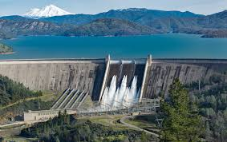

Sobre o trabalho
Este projeto tem como objetivo apresentar três fontes de energia renovável: eólica, solar e hidrelétrica. A proposta é mostrar, de forma simples e direta, como cada uma funciona, seus benefícios e sua importância para um futuro mais sustentável. Através de uma página informativa, buscamos conscientizar sobre alternativas energéticas limpas e eficientes.
Eólica

Utiliza a força dos ventos para gerar eletricidade por meio de aerogeradores. É uma fonte limpa, renovável e sustentável.
Solar

Capta a luz do sol por meio de painéis solares para produzir energia. É abundante, silenciosa e não poluente.
Hidrelétrica
Aproveita a força da água em movimento para gerar energia elétrica. É renovável e muito utilizada no Brasil.